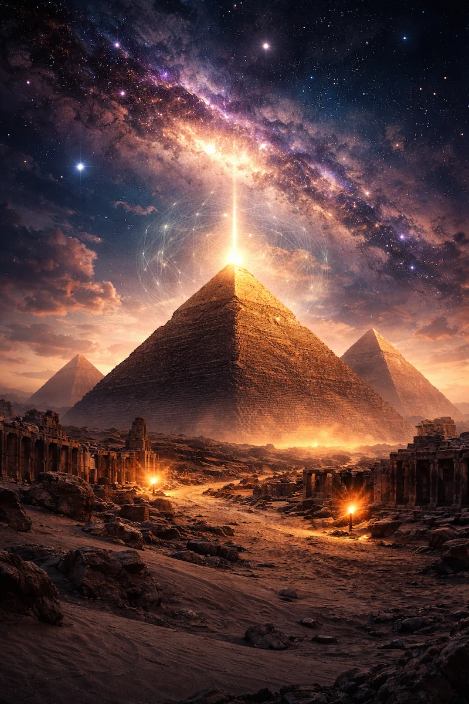

“Some structures are not only built to occupy space. They are designed to organize attention, direction, memory, and symbolic energy.”
Pyramid Rotratix
The Hidden Engine Beneath the Pyramid
A cinematic exploration of secret corridors, false walls, rotating chambers, and the ancient-tech logic powering the Rotratix system.

Hidden Passage
A seamless stone wall conceals the route into the deeper Rotratix mechanism.

The Long Hallway
A narrow corridor pulls the viewer forward with light, shadow, and mystery.

Core Chamber
The inner system glows like an ancient machine awakened beneath the pyramid.

Secret Mechanism
The wall was never a wall.
Behind the carved surface is a disguised passage door. When the Rotratix alignment activates, the false wall separates, revealing the hidden route into the pyramid’s mechanical interior.